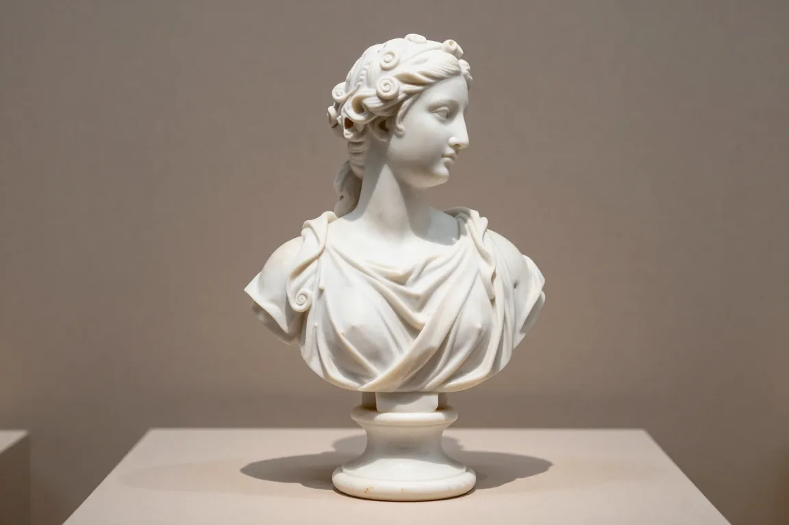

Uglasert hvitt porselen som etterligner marmor, støpt i former som statuetter og byster. Viktorianske pottemakere laget det til hjemmet, fra kopier av kjente skulpturer til sentimentale og litterære figurer.

Kjerneidé
Fin skulptur kommer inn i den viktorianske stuen når en hvit porselensslipp støpes i en form og brennes uten glasur: marmor, men liten og billig.
Designprinsipper
Støp figuren i gipsformer av en tynn, kremaktig slipp av parian-masse.
Brenn figuren uglasert ved omtrent 1200 °C, slik at flaten ser ut som parisk marmor.
Hent motivet fra en kjent skulptur: en gresk slave, en Dorothea, en Venus, en byste av en dikter eller en dronning.
Gjør figuren 20 til 60 cm høy, og bysten 20 til 40 cm.
Hold flaten glatt og voksaktig, med et svakt appelsinskallkorn.
Gi detaljer med skarpt relieff: krøller, laurbær, blonder og draperi, i grunn dybde.
Legg til en farget glasur eller litt farget slipp bare som bunn, aldri over huden.
Merk bunnen med produsenten, billedhuggeren og datoen for registreringen.
Antimønstre
En blank glasur over figuren
En sterk emaljemaling på kjolen
Et grovt leirgods med synlig korn
En positur i rokokko S-kurver med blonder dyppet i slipp